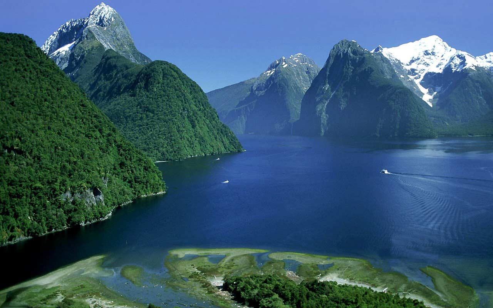

×

New Zealand
Происхождение названия
Название, данное стране маори до появления здесь первых европейцев, не сохранилось, но известно, что остров Северный маори именовали Те Ика-а-Мауи (маори Te Ika-a-Māui), что может быть переведено как «рыба, принадлежащая Мауи». Мауи — полубог в легендах маори, поймавший в океане огромную рыбу, превратившуюся после этого в остров. Остров Южный имел два распространённых названия: Те Ваи Паунаму (маори Te Wai Pounamu) и Те Вака-а-Мауи (маори Te Waka a Māui)[5]. Первое название может быть переведено как «нефритовая вода», а второе как «лодка, принадлежащая Мауи», уже упомянутому выше полубогу легенд маори.
История
Новая Зеландия — одна из самых поздно заселённых территорий. Радиоуглеродный анализ, свидетельства обезлесения и вариабельность митохондриальной ДНК у маори позволяют сделать вывод о том, что первые восточные полинезийцы поселились здесь в 1250—1300 годах после продолжительных путешествий по южным тихоокеанским островам.
Первые европейцы, достигшие Новой Зеландии, прибыли на корабле вместе с нидерландцем Абелем Тасманом в 1642 году. В результате стычек с местными четверо членов команды оказались убиты, а как минимум один маори оказался ранен картечью.
Новая Зеландия участвовала в мировой политике, приняв участие в Первой и Второй мировых войнах как часть Британской империи, а также пострадала от Великой депрессии. В результате депрессии было избрано первое лейбористское правительство и началось строительство государства всеобщего благосостояния с протекционистской экономикой.
Правительство и политика
На данный момент действующий президент страны — Елизавета II (с 6 февраля 1952).
Данные: Дата рождения 21 апреля 1926. Место рождения Мейфэр, Лондон, Великобритания. Супруг Филипп Маунтбеттен. Дети Чарльз, принц Уэльский, Анна, принцесса Великобритании, Эндрю, герцог Йоркский и Эдуард, граф Уэссекский.
Праздники
| Дата | Праздник | Примечание |
|---|
| 1 января | Новый год | Начало календарного года |
| 2 января | День после Нового года | День после Нового года |
| 6 февраля | День Вайтанги | День Вайтанги |
| 25 апреля | День АНЗАК | День АНЗАК |
| 25 декабря | Рождество | Празднование Рождества |
____